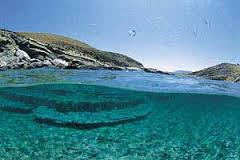
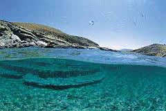
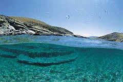
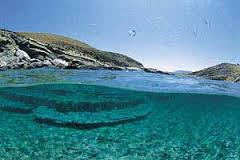

 

Önemli tarihi yapıları ve mesire yerleri ile Bademli'nin o kadar çok gezilip, görülecek yeri var ki, bu küçük beldenin bu kadar zenginliğe sahip olmasına sizler de çok şaşıracaksınız. Fotoğraf makinenizi yanınıza almayı ihmal etmeyin. Bademli'nin tarihi 1327 yılına dayanır. Aydınoğulları Beyliği'nden İbrahim Bahadır'ın, Bodamya Beyi olarak anılmasıyla anılan Bademli adının 'ırmak yurdu' anlamındaki 'Potamia'dan kaynaklandığı yazılır. Potamia adı zaman Evliya Çelebi'nin Seyahatnamesi'nde 'Bademye' şekline gelmiş, 1965'te Bademli olarak değiştirilmiş. Eski Türk mimarisinin güzelliklerini yansıtan Bademli evlerin benzerlerini ise ancak Birgi'de görebilirsiniz. Bademli'nin evleri Safranbolu evleri gibi özelliğini korumayı başarmış yapılardır. "Hanay" biçimi inşa edilmiş iki katlı evlerin, yan yana yapılmış odalarının önünde ise iç avluya bakan "çardak" bulunur. 'Potomia' kalesini mutlaka görün. Bademli'nin parkları ve mesire yerleri sizlere doğayla baş başa kalabileceğiniz eşsiz bir ortam yaratacak.
Toplam 2 bin 900 nüfuslu Bademli, her mevsim başka güzel. Şirin beldede; tarihi Salih Efendi, Çapanoğlu ve Apbaş mescitleriyle Abdülbaki, Hayrettin Efendi, Kılcı Mehmet Ağa ve Derviş Ağa camileri zengin kültür varlıkları olarak hemen gözünüze çarpıyor. Akdeniz iklim özelliklerine sahip binlerce çeşit bitkinin yetiştiği Bademli, Aydın dağlarından gelen çayların zengin kaynak sularıyla besleniyor. Belediyenin 1990 yılı başında kurup, işlettiği 'Bademsu' tesisi ise bunun en güzel örneği. Yakında hizmete girecek olan Bademli barajı, su kaynaklarını daha da zenginleştirecek. Halkının büyük bir bölümünün ekmeğini topraktan çıkardığı beldede, toplam tarım alanı 12 bin dekar civarında. Cenneti andıran yaylalarında ise kestane, ceviz, elma gibi meyvelerle barbunya ve fasulyesi de ünlü. Kaliteli kirazın şöhreti de festivalle yayılıyor.